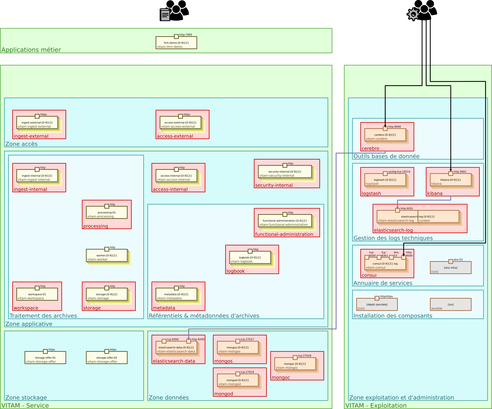

3. Architecture de la solution logicielle VITAM¶
Le schéma ci-dessous représente une solution VITAM :

Vue d’ensemble d’un déploiement VITAM : zones, composants
Voir aussi
Se référer au DAT (et notamment le chapitre dédié à l’architecture technique) pour plus de détails, en particulier concernant les flux entre les composants.